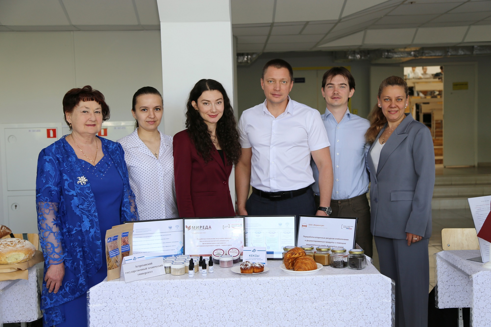
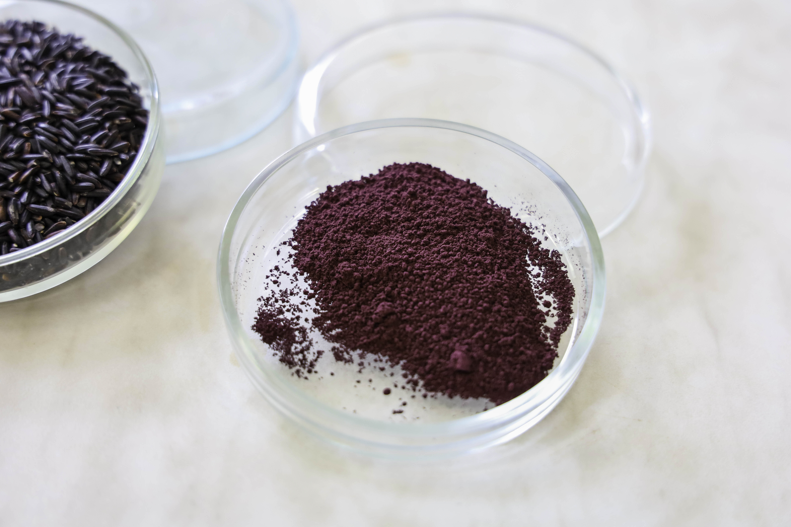

Натуральные антоцианы из растительного сырья
Инновационная технология водной ультразвуковой экстракции чёрного риса - новый продукт для пищевой, косметической и фармацевтической промышленности.
Основу продукта составляют антоцианы - природные пигменты, обеспечивающие темно-фиолетовую окраску. Ключевые компоненты — цианидин-3-глюкозид и пеонидин-3-глюкозид. Порошок имеет высокую концентрацию сухих веществ - 0,95 кг/кг. Для сравнения, черный рис содержит антоцианов в 60 раз больше, чем краснозерные сорта, и его антирадикальная активность в 45 раз выше
Узнать большеПроект реализован при поддержке Фонда содействия инновациям в рамках программы «Студенческий стартап» Платформы университетского технологического предпринимательства федерального проекта «Технологии», входящего в состав национального проекта «Эффективная и конкурентная экономика».
О нас
Общество с ограниченной ответственностью «МИРЕДА» — молодая, динамично развивающаяся компания, основанная в 2025 году для работы в сфере развития технологий и производств пищевых продуктов и биологически активных веществ.
Ключевым направлением работы ООО «МИРЕДА» является разработка инновационной технологии и организация производства антоцианов из растительного сырья.
В основе технологии получения антоцианов лежит водная ультразвуковая экстракция черного риса, позволяющая максимально сохранить биологическую активность ценных компонентов при их эффективном извлечении.
В июне 2026 года порошок антоцианов из черного риса, производимый ООО «МИРЕДА», был представлен на Международной научно-практической конференции «Устойчивое технологическое развитие аграрно-пищевых систем – гарантия продовольственной безопасности» в рамках проходившего там Смотра-конкурса лучших пищевых продуктов, продовольственного сырья и инновационных разработок. Участие в столь представительном форуме, собравшем ведущих экспертов пищевой отрасли из России и зарубежья, подтверждает высокий научный и инновационный потенциал нашей разработки.

Наш продукт
Продукт. Порошок антоцианов из черного риса — это натуральный экстракт в виде сухого тонкодисперсного порошка, получаемый по инновационной, экологически чистой технологии. Этот продукт сочетает в себе свойства натурального пищевого красителя и ценной биологически активной добавки.
Внешний вид и органолептика: это однородный тонкодисперсный порошок тёмно-фиолетового цвета. Он обладает слабокислым или кислым вкусом и естественным запахом, свойственным исходному растительному сырью — черному рису.
Состав: основу продукта составляют антоцианы — природные пигменты, обеспечивающие темно-фиолетовую окраску. Ключевые компоненты — цианидин-3-глюкозид и пеонидин-3-глюкозид. Порошок имеет высокую концентрацию сухих веществ — 0,95 кг/кг.
Преимущества: для сравнения, черный рис содержит антоцианов в 60 раз больше, чем краснозерные сорта, и его антирадикальная активность в 45 раз выше.

Наши контакты
Для сотрудничества и заказов вы можете связаться с нами:
Контактное лицо: Директор Коннова Ольга Ивановна
Юридический адрес: 414056, Астраханская область, г. Астрахань, ул. Савушкина, д. 4 к. 1, кв.
128
Телефон: 8-905-480-14-95